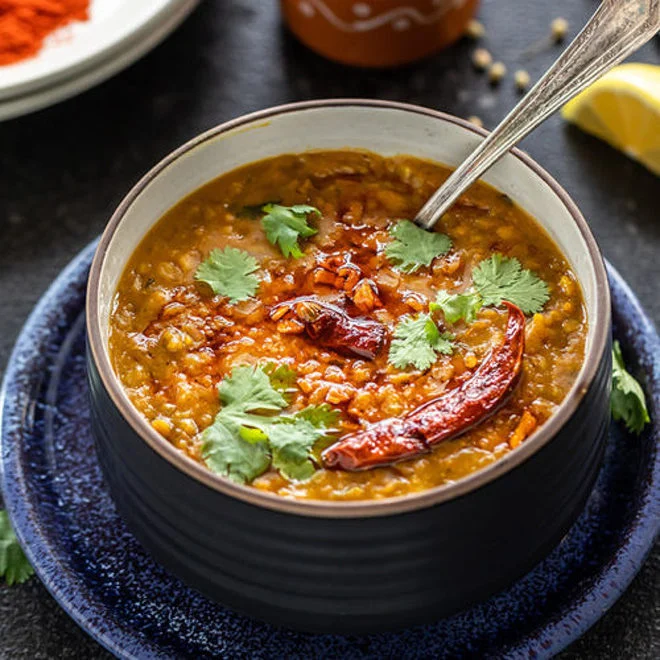

Dal Tadka

Description
Dal tadka is a popular dish of slow cooked spiced red or yellow lentils, further enhanced by tempering other spices in oil or ghee
Cooking dal tadka can be done very quickly using an instant pot or pressure cooker
Ingredients
- Red or yellow lentils
- Lal mirch
- Turmeric
- Garam masala
- Ginger
- Hing
- Cumin seeds
- Coriander seeds
Steps
- Rinse lentils
- Add 2 cups of water and lentils to instant pot
- Grate ginger into pot and add some turmeric
- Pressure cook on high for 8 minutes and releaee naturally
- Cook remaining spices in oil or ghee, pour onto cooked lentils, and serve